Vanderbilt · Learning Series · ATD facilitator guide · print edition
Coaching for Performance, the facilitator guide

Run of show
| Screen | Full (min) | Core (min) |
|---|---|---|
| Welcome / QR | 3 | 2 |
| Objectives | 2 | 1 |
| The Chancellor's charge | 3 | — |
| Agenda | 1 | — |
| 01 · The case for coaching | 9 | 5 |
| Manifesto | 1 | — |
| 02 · Your telling default | 8 | 5 |
| 03 · The GROW conversation | 16 | 12 |
| 04 · Powerful questions | 9 | 6 |
| 05 · Feedforward | 12 | 8 |
| 06 · Choose your model | 7 | 3 |
| 07 · When NOT to coach | 6 | 4 |
| Recap quiz | 4 | 4 |
| Capstone · My coaching plan | 8 | 7 |
| Glossary | 1 | — |
| Closing · commitment | 3 | 3 |
| Total | 93 | 60 |
Audience
People managers, team leads, and HR/talent partners. Best with 8 to 24 people for pair and triad practice.
Room setup
Projector + presenter device; learners on their own devices via the Welcome-slide QR; movable seating for pairs (GROW) and triads (Feedforward). Virtual: breakouts of 2 for GROW, 3 for Feedforward.
Materials
- Projector or large display and the facilitator link open (this edition)
- Facilitator laptop with arrow keys or clicker; all notifications off
- Learner devices (BYOD) joining via the welcome-slide QR
- A few printed cheat sheets (cheatsheet.html) for anyone without a device
- Printed capstone worksheets (worksheet.html) as the no-device and projector-failure fallback
- Movable chairs: pairs for GROW, triads for Feedforward; plan the shuffle before people sit
- Whiteboard or flip chart for the parking lot and the best question conversions
A week before
- Read this guide end to end, then run BOTH editions start to finish, doing every exercise, including a deliberately bad run of the GROW simulator (pick every advice option; you'll quote the result).
- Build your own coaching plan in the capstone for a real person you manage. You will reference having done it, not the contents.
- Recruit a colleague and run one real GROW conversation before you teach one. Ten minutes; it changes how you debrief the roleplay.
- Decide your path now: Full (90-minute slot) or Core (60). Mark which videos you keep.
- Send the pre-work invite (template on this page); a primed room saves the roleplay five minutes of topic-hunting.
The day before
- Test the projector with the facilitator link; confirm the notes rail is readable from where you'll stand.
- Scan the welcome QR from the back of the room with your own phone; it must land on the learner edition.
- Print 5 to 10 cheat sheets and worksheets, plus this guide's run-of-show.
- Rehearse the Feedforward rules out loud once; the exercise lives or dies on you enforcing 'thank you' warmly.
- Re-read the tough-questions bank; say the 'I don't have time to coach' answer out loud. You will get it.
30 minutes before
- Welcome slide up as people arrive; it does the enrolling for you.
- Close every other tab and app; silence the machine.
- Test arrow-key navigation and one interaction (run one stage of the GROW simulator).
- Write 'PARKING LOT' at the top of the whiteboard.
- Plan the triad math for your headcount; a leftover pair runs Feedforward with two suggestions each instead of four.
When things go sideways
If Projector or the site fails mid-session: Teach from the printed cheat sheet: GROW's question bank, the three powerful-question tests, and the Feedforward rules all work on a whiteboard. The pair and triad practice needs no screen at all.
If Learner devices can't join (wifi/filters): Run facilitator-only: the GROW simulator plays brilliantly on the projector with the room voting A/B/C by hands; private work (ratio, capstone) moves to the printed worksheet. You lose typing, not learning.
If You're 10+ minutes behind by Feedforward (Section 05): Declare the Core path silently: cut remaining videos and group debriefs, run one Feedforward rotation instead of three. Never cut the GROW pair roleplay, the recap, or the capstone; they carry objectives 2 and 5.
If The GROW roleplay coaches keep giving advice: Expected; it's the whole point. Interrupt once, kindly and globally: 'Coaches, if you've said anything that isn't a question, restart from the bank.' Then let pairs self-police. Name it in the debrief as evidence of the default.
If Someone dominates, or dismisses coaching as 'too slow for the real world': For dominators: 'Hold that; parking lot.' For the skeptic, don't argue; route to Section 07: 'You're right that directing is sometimes correct, and there's a whole section on when. The question is the ratio.' The skeptic usually becomes your best Section 07 voice.
If A coachee brings a heavy or personal topic into the roleplay: The brief says low-stakes work challenges; re-anchor gently if a pair drifts deep. Coaching practice isn't therapy, and this room isn't private. If someone is genuinely struggling, connect them with EAP resources after, privately.
Tough questions, ready answers
Q: I don't have time to coach. Directing is faster.
Directing IS faster, once. The same problem returning to your desk every week is the slow path. The math of the session: a ten-minute GROW conversation that builds capability beats sixty one-minute answers that build dependence. Coaching is how a manager buys their calendar back.
Q: What if they come up with a worse plan than mine?
Two honest answers. First, check the stakes: if the cost of their B-minus plan is small, their owned B-minus beats your imposed A, because they'll execute it harder and learn from it. Second, coaching isn't withholding: after their options are on the table, 'may I add one?' is allowed. Yours becomes an option, not the answer.
Q: Isn't this just therapy? I'm not qualified for that.
Coaching is about work goals, forward motion, and their own thinking; it stays on professional ground. If a conversation moves into mental health, personal crisis, or anything clinical, that's your cue to connect them with EAP or HR resources, not to coach harder. Knowing that line IS part of the skill.
Q: My own manager never coaches me. Why should I go first?
Because the research says it's the top behavior of great managers, and you'd rather be one than wait for one. Also: coaching works upward. 'What would make this most useful?' is a question you can ask your boss about your own one-on-ones. Someone starts the culture; managers in this room are the likeliest candidates.
Q: Can I use these questions in performance or disciplinary conversations?
The skills transfer, but the frame changes. A formal performance process has requirements that come first; talk to HR before improvising coaching moves inside one. For everyday performance conversations short of that line, GROW plus honest expectations is exactly the right tool.
Q: How is coaching different from mentoring?
A mentor shares their path: 'here's what worked for me.' A coach helps someone find their own: 'what might work for you?' Both are valuable; the failure mode is mentoring when you meant to coach, because your story quietly becomes their instruction. Notice which one you're doing on purpose.
Copy-paste templates
Pre-work invite (paste into the calendar invite)
Subject: Before our Coaching for Performance session. Two small things before you arrive: 1) Think of one real, low-stakes work challenge you're currently mulling; you'll be coached on it (nothing sensitive, and you choose what to share). 2) Think of your last five one-on-ones; you'll rate, privately, how many were coaching versus telling. Everything you type in the session stays on your screen.
7-day pulse (send one week after)
Subject: One week later, did the coaching conversation happen? Three quick lines, reply whenever: 1) Did you run the conversation you planned? 2) Which model did you use (GROW, CLEAR, OSKAR)? 3) What was different compared to your usual 1:1, in one sentence? Replies come to me only. Not yet? This note is your nudge; the plan you wrote still works.
30-day ratio re-poll (send a month after)
Subject: The five-1:1 question, round two. In the session you privately rated your last five one-on-ones: how many were coaching (they discovered) versus telling (you directed)? Same question, new month: of your LAST five, how many were coaching? Reply with just the number. Movement of one point across the group is the win we designed for.
After the session
Seven days out, send the pulse: 'Did you run the coaching conversation? Which model? What was different from your usual 1:1?' Replies are Kirkpatrick Level 3 evidence. At 30 days, re-run the opening ratio poll ('of your last five 1:1s, how many were coaching?'); the shift in that number is the program's headline metric.
Welcome / QR Full 3 min · Core 2
Get every learner into the experience on their own device, and set the practice norms: real topics, low stakes, roles not names.
Say
“Welcome. Point your camera at that code before we start. Today you will coach, and you will be coached, on real work topics you choose. Ground rules: keep your practice topics low-stakes, use roles instead of names, and everything you type stays on your screen.”
Do
- Have this slide projected as people arrive.
- Point at the QR and get phones up before you say anything else.
- State the norms: you'll coach and be coached on REAL but low-stakes topics; roles, never names; nothing typed leaves your screen.
- Confirm by show of hands that most of the room has the site open before advancing.
Validate: 80%+ of the room has the deck open on a device.
Watch for: Anyone without a device: pair them with a neighbor now and hand them a printed worksheet for the private exercises.
Transition: “Everyone in? Then here's the promise of the next hour.”
Core path: Core: one scan prompt, state the norms, move on.
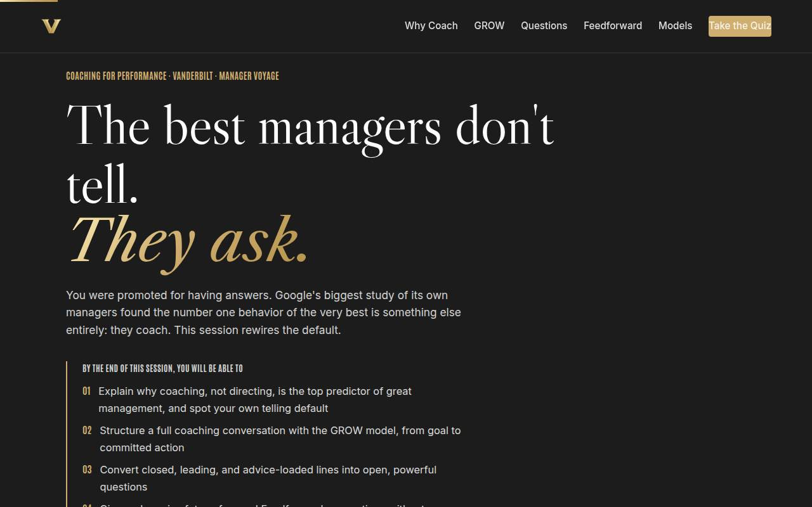
Objectives Full 2 min · Core 1
Set the contract: five capabilities, ending in a real coaching conversation with a date and a written opening question.
Say
“You were promoted because you were good at the work, which means you're carrying a habit: when someone brings you a problem, you solve it. Google studied ten thousand of its own managers to find what the best ones do, and the answer wasn't faster solving. By the end of this hour you'll have a coaching structure, a bank of questions that actually work, and one real conversation planned with a date on it.”
Do
- Read the five objectives briskly, in plain language.
- Land on the fifth: this session ends with a REAL conversation planned, opening question written, date set.
- Name the sources once for credibility: Google's Project Oxygen, McKinsey, the ICF, Whitmore's GROW, Goldsmith, HBR.
Ask
“Show of hands: who has ever left a one-on-one having done all the talking?”
Expect:
- Most hands, with laughter
- A few proud holdouts
- Someone says 'that's every one-on-one'
Respond: Keep it light: 'Good, you're in the right room. By the end of today the goal is that THEY do the talking, and you do the asking.'
Validate: Learners can say what the capstone will be (a planned, dated coaching conversation with a written opening question).
Watch for: The 'soft skills' eye-roll. The counter is on the slide: this is the number one behavior in the largest manager study ever run.
Transition: “Seven ideas get us there. Here's the road.”
Core path: Core: objectives 2 and 5 out loud; the rest on screen.
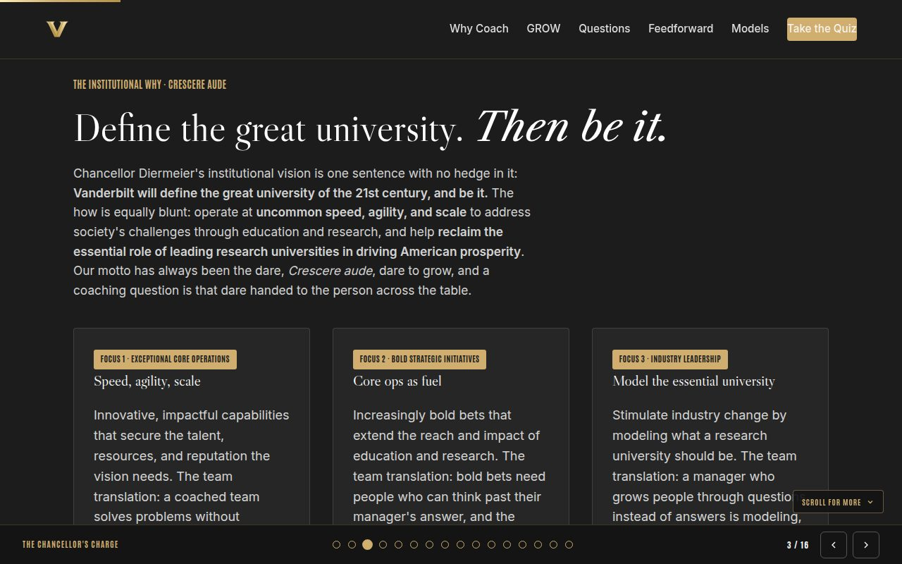
The Chancellor's charge Full 3 min · Core skip
Tie coaching to the Chancellor's charge: a university built for speed and bold bets needs teams that think without queueing at the manager's door.
Say
“One minute on why this is a university priority and not a management fad. Chancellor Diermeier's vision is one sentence: Vanderbilt will define the great university of the 21st Century and be it. Speed at scale and bold bets both need people who can think past their manager's answer, and coaching is how a team learns to do that. Our motto is 'dare to grow'; a coaching question is that dare handed across the table.”
Do
- Read the vision sentence verbatim; give it a beat.
- Walk the three focus cards, one line each, landing on each 'team translation.'
- Point at the flywheel card: coached teams create capacity the university never had to hire. Then move; the evidence for coaching is the next section.
Transition: “That's the institutional why. Here's the road for the session.”
Core path: Core: read the vision sentence, gesture at the three focuses, move on; under a minute.
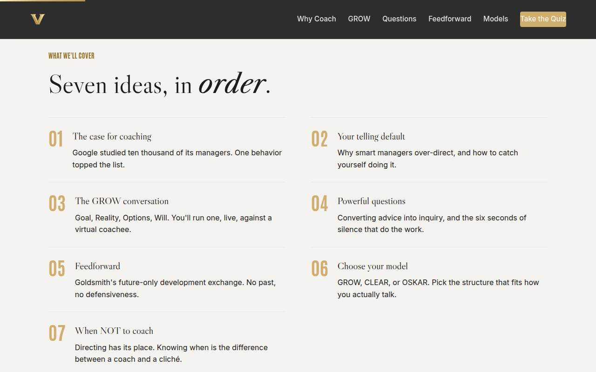
Agenda Full 1 min · Core skip
Show the arc once so learners can place each tool as it arrives.
Say
“Four moves: why coaching wins, the craft of it, the judgment of when to use it, and your plan to run one this week.”
Do
- Walk the seven items in one breath each.
- Point out the shape: the case (01-02), the craft (03-05), the judgment (06-07), then the plan.
Validate: None needed; this is orientation.
Watch for: Don't teach here; every framework has its own slide.
Transition: “Start with the evidence, because 'be a coach' is advice, and data is a reason.”
Core path: Core: skip entirely; the deck's structure carries it.
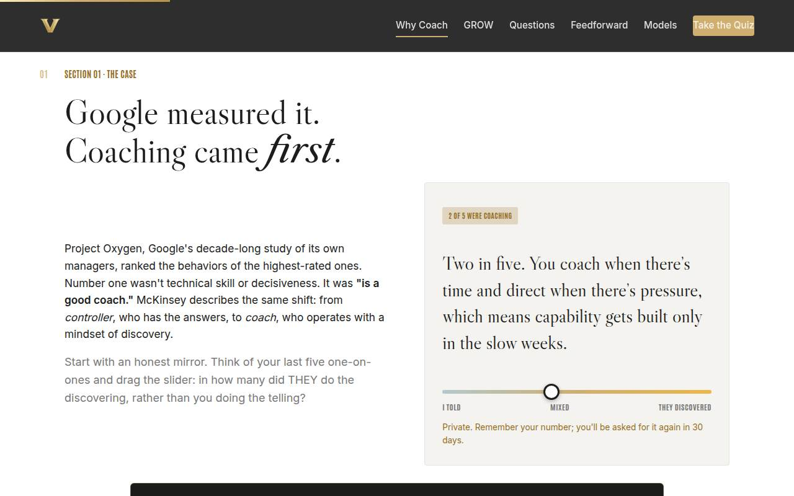
01 · The case for coaching Full 9 min · Core 5
Establish the research case (Project Oxygen, McKinsey) and capture each learner's private baseline coaching ratio for the 30-day measure.
Say
“Google ran the largest study of managers ever done inside one company: Project Oxygen. They ranked what their highest-rated managers actually do. Number one was not technical depth, not decisiveness. It was: is a good coach. McKinsey found the same shift in leaders everywhere, from controller, who has the answers, to coach, who leads with discovery. Before we build the skill, take your own baseline: of your last five one-on-ones, in how many did THEY do the discovering?”
Do
- Give the headline: Google ranked its best managers' behaviors; 'is a good coach' came first, ahead of technical skill.
- Demo the ratio slider on the projector, then send them to their devices: your last five 1:1s, honestly.
- Tell them to remember their number; they'll be asked again in 30 days. This is the course's before-photo.
- Play the Project Oxygen video (6 min) on the Full path.
- Run the quick check, then the pair activity: the best manager you ever had; what did they DO in conversations?
Ask
“Think of the best manager you ever had. What did they do in conversations that others didn't?”
Expect:
- 'They listened' / 'they actually heard me'
- 'They asked me what I thought' / 'made me figure it out'
- 'They believed in me before I did'
Respond: Point at the pattern: 'Notice nobody said they had the best answers. You just rediscovered Project Oxygen from your own career.'
Debrief: The best managers you've had were coaching you, whether they called it that or not. Today you get the mechanics.
Validate: Quick check answered correctly; every learner has set the slider and noted their number.
Watch for: Ratio inflation. Frame it kindly before they slide: 'coaching means THEY discovered; if you gave the answer nicely, that's telling.'
Transition: “So why isn't everyone coaching already? Because of how managers get made.”
Core path: Core: keep the slider and check; cut the video (assign as follow-up) and the pair share.
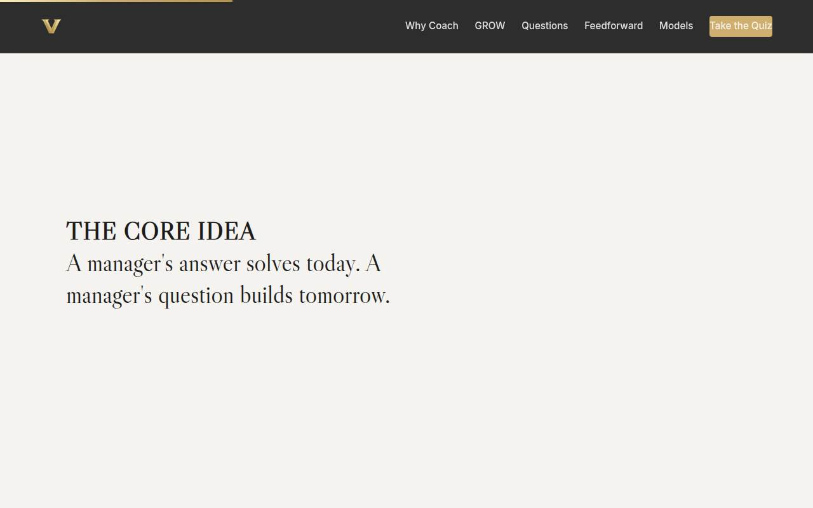
Manifesto Full 1 min · Core skip
One beat of stillness to lock the core idea before the toolkit starts.
Say
“A manager's answer solves today. A manager's question builds tomorrow.”
Do
- Let the line animate word by word. Say nothing until it finishes.
- Read it once, slowly, then advance.
Validate: None; this is pacing.
Watch for: The urge to talk over it. Don't.
Transition: “Here's why the answer keeps winning anyway.”
Core path: Core: skip; say the line yourself as you pass it.
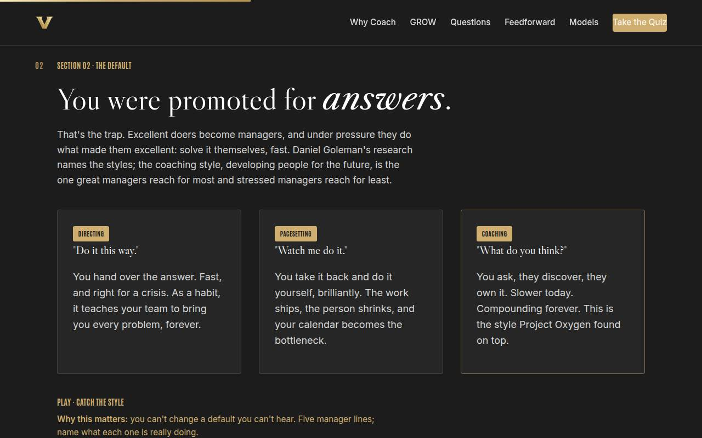
02 · Your telling default Full 8 min · Core 5
Name the telling default without shame, give it Goleman's vocabulary, and have each learner catch it in real manager language.
Say
“Here's the trap nobody warns new managers about. You got this job by being excellent at solving problems, so when someone brings you one, every instinct you were promoted for says: solve it. Daniel Goleman's research names the styles. Directing hands over the answer. Pacesetting takes the work back and does it better. Coaching asks, and builds the person who won't need to ask next time. Under pressure, almost everyone drops to the first two.”
Do
- Teach the three cards: directing, pacesetting, coaching. Spend your emphasis on pacesetting; it's the failure mode that FEELS like helping.
- Be honest about why the default exists: they were promoted for answers, and answers got rewarded for years.
- Send them to 'Catch the style': five manager lines, name what each is doing.
- Call out item 5 (the template hand-off) in the debrief; it fools the most people.
- Run the solo activity: one recent moment you solved it FOR someone. That moment fuels the rest of the session.
Ask
“What does a team learn when the manager always has the answer?”
Expect:
- To stop thinking / to just ask the manager
- To bring every problem upward
- That their own judgment isn't trusted
Respond: All three, and name the compounding cost: 'You become the bottleneck for a team that was trainable. The queue outside your door is a curriculum you taught.'
Debrief: The default is trained, not chosen, which is good news: trained things can be retrained. That's the rest of today.
Validate: 4+ of 5 on the trainer for most of the room; every learner has written their telling moment and who it was with (role only).
Watch for: Guilt spirals. Reframe fast: the default is trained, not a character flaw, and it's correct in plenty of situations. Section 07 gives it a legal home.
Transition: “Retraining starts with a structure. Four letters, used by more coaches than any other model on earth.”
Core path: Core: teach the cards fast, run the trainer, keep the written moment. Skip the Goleman video link mention.
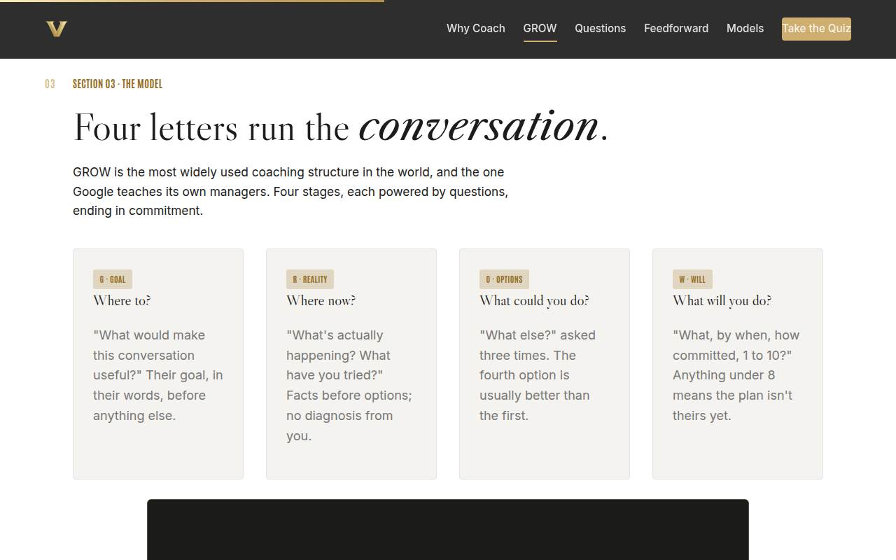
03 · The GROW conversation Full 16 min · Core 12
Install GROW as the conversation spine, feel it work in the simulator, then run it live in the no-advice pair roleplay: the session's core rep.
Say
“GROW is the most widely used coaching structure in the world, and it's the one Google teaches its own managers. Goal: what do they want from this conversation, in their words. Reality: what's actually happening, explored, not diagnosed. Options: what could they do, and the magic words are 'what else,' asked three times, because the fourth idea usually beats the first. Will: what will they do, by when, and how committed, one to ten. Under an eight, the plan isn't theirs yet. You're about to run one against Jordan, who is having a rough quarter.”
Do
- Teach the four cards briskly: Goal, Reality, Options, Will, one line each. The question bank in Go deeper is theirs to keep.
- Play the GROW video (7 min) on the Full path.
- Send them to Coach Jordan: the simulator runs one full GROW conversation; their choices open it up or shut it down.
- Debrief the simulator with the room's scores: who got Jordan to a 9-out-of-10 commitment? What did the advice options do?
- Then the main event: pair roleplay. Coachee brings their real low-stakes challenge; coach uses ONLY questions from the bank. Four minutes, verdict, swap.
- Enforce the one rule warmly: if the coach says anything that isn't a question, restart from the bank.
Ask
“After the simulator: what happened to the conversation every time you gave Jordan the answer?”
Expect:
- 'Jordan asked me what to do next' / dependence
- 'The energy dropped' / compliance instead of commitment
- 'It became my plan, my problem'
Respond: Exactly: 'Advice transferred ownership to you. The question options kept the thinking, and the plan, on Jordan's side of the table. Now feel it with a real human.'
Debrief: One structure, questions only, and a commitment number at the end. If you take a single tool from today, take the bank.
Validate: Simulator completed by most of the room; every pair ran at least one direction of the roleplay and heard the coachee's one-line verdict ('you coached me' or 'you managed me').
Watch for: Coaches slipping into advice inside 60 seconds; it will happen and it IS the lesson. Also watch Options getting one answer: prompt 'what else?' from the front if you hear pairs stalling.
Transition: “The structure is easy to remember and hard to execute, because your questions keep trying to smuggle answers. Let's fix the questions themselves.”
Core path: Core: cut the video; keep the simulator (it's fast) and ONE direction of the roleplay, no swap.
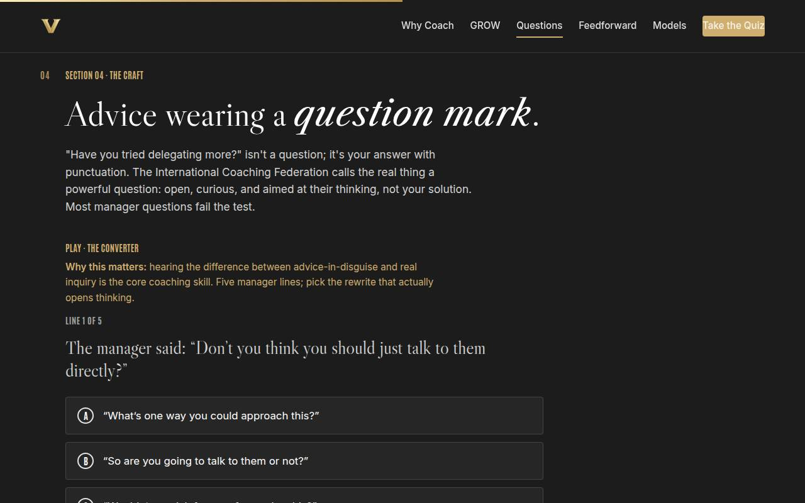
04 · Powerful questions Full 9 min · Core 6
Install the ICF's three tests (open, clean, theirs) and train the ear to catch advice wearing a question mark.
Say
“The International Coaching Federation calls the real thing a powerful question, and it has three tests. Open: can't be answered yes or no. Clean: your answer isn't hiding inside it. Theirs: it aims at their thinking, not your curiosity. Most manager questions fail test two. 'Have you tried delegating more?' isn't a question; it's advice with a question mark, and everyone in the room hears the difference. Then, after you ask a real one: silence. Six seconds. The discomfort you feel is them thinking.”
Do
- Open with the slide's line: 'have you tried delegating more?' is your answer with punctuation.
- Send them to the converter: five manager lines, pick the rewrite that actually opens thinking.
- Teach the six-second rule from the gold card, and model it: ask the room a question and visibly wait.
- Run the group activity: convert your OWN most recent advice into one clean question, pairs verdict, best two to the room.
- Write the room's best conversion on the whiteboard; it stays up for the rest of the session.
Ask
“Why is the silence after a good question so hard for managers specifically?”
Expect:
- We're used to having the answer ready
- Silence feels like failure / losing control of the meeting
- We assume they're stuck and need rescuing
Respond: Name the reframe: 'Silence isn't the conversation breaking; it's the conversation working. Whoever fills it first buys the problem, and for years that's been you.'
Debrief: Three tests and six seconds. Your questions just got more powerful than most professional interviewers'.
Validate: 4+ of 5 on the converter; each learner has one before/after conversion of their own advice.
Watch for: Questions that pass 'open' but fail 'clean': 'what do you think about talking to them directly?' is still smuggling. Use the room's examples to show it.
Transition: “Questions coach the present. The next tool coaches the future, and it removes the single biggest source of defensiveness: the past.”
Core path: Core: converter plus the six-second rule; the own-advice conversion moves into the capstone.
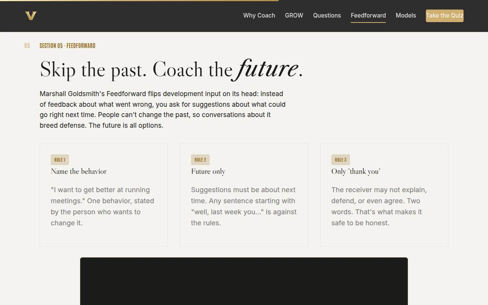
05 · Feedforward Full 12 min · Core 8
Run Goldsmith's Feedforward exchange live in triads: the session's highest-energy rep and the tool learners reuse with their teams the same week.
Say
“Marshall Goldsmith coaches CEOs, and this is his signature move. Feedback looks backward at what went wrong, and people defend the past because they can't change it. Feedforward flips it: name one behavior you want to improve, collect suggestions about NEXT time, and respond to every one with exactly two words: thank you. No explaining, no defending, no 'that wouldn't work here.' You are about to feel how different input lands when nobody is judging history.”
Do
- Teach the three rule cards: name the behavior, future only, receiver says only 'thank you.'
- Play the Goldsmith demo (4 min); he runs the exercise faster than you can explain it.
- Send them to the classifier: five lines, past, future, or advice in disguise. It trains the referees.
- Form triads and run the live exchange: one behavior each, two suggestions per partner, 'thank you,' rotate.
- Enforce the rules warmly; the first 'well, last week you' gets a friendly buzzer from you.
- Debrief one question only: how did receiving with no right of reply feel?
Ask
“After the triads: what did it feel like to receive suggestions when you weren't allowed to defend yourself?”
Expect:
- Relieving / lighter than feedback
- Hard! I wanted to explain so badly
- Fast, we got a lot of ideas in five minutes
Respond: All three are the point: 'The urge to explain is the defensiveness we're engineering out. And the volume of usable ideas per minute beats any performance review you've ever sat through.'
Debrief: The future has no defense attorneys. Take the exercise home: your team can run it in ten minutes at any staff meeting.
Validate: Classifier 4+ of 5; every triad completed at least one full rotation and each learner received suggestions and said only 'thank you.'
Watch for: Triads negotiating instead of receiving ('yeah but the reason I do that is...'). The 'thank you' rule is the exercise; guard it. Also watch the leftover pair; give them the two-suggestion variant.
Transition: “You now have a structure, sharper questions, and a future-focused exchange. Time to make the toolkit yours: which structure fits YOU?”
Core path: Core: cut the video and classifier debrief; one triad rotation instead of three. The live exchange survives every cut.
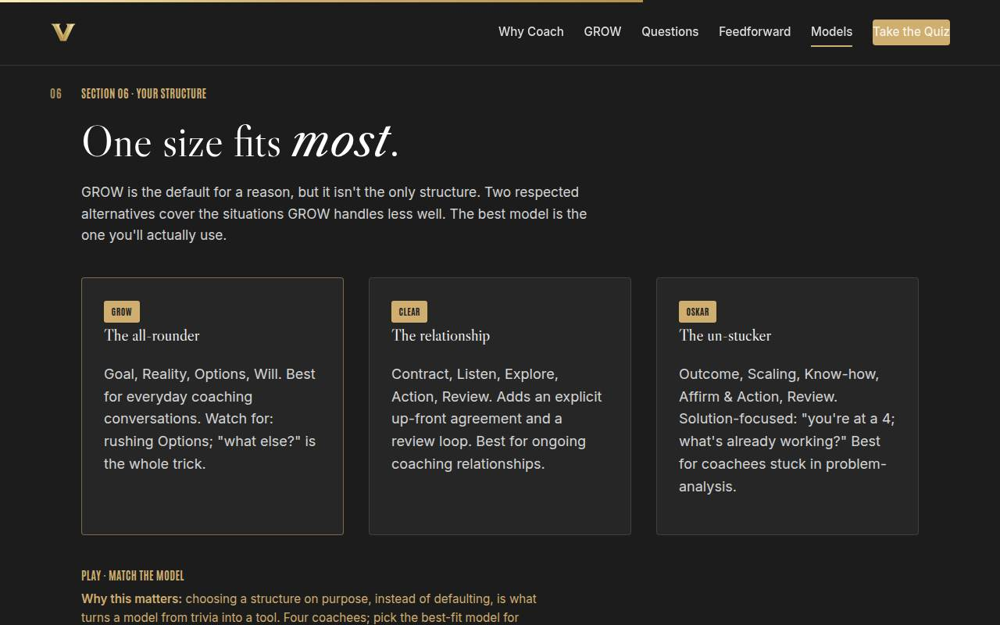
06 · Choose your model Full 7 min · Core 3
Position CLEAR and OSKAR beside GROW and have each learner choose a structure on purpose, a rehearsal for the capstone.
Say
“GROW is the default for a reason, but two alternatives earn their place. CLEAR, Contract, Listen, Explore, Action, Review, starts with an explicit agreement: what do you want from these sessions, and from me? Perfect for an ongoing coaching relationship. OSKAR is solution-focused: Outcome, Scaling, Know-how, Affirm and Action, Review. For the person who has analyzed the problem to death, 'you're at a four; what's keeping it from being a two?' points them at what's already working. Pick the one that sounds like your voice.”
Do
- Walk the three cards: GROW the all-rounder, CLEAR for ongoing relationships, OSKAR for the stuck.
- Keep it light: the models share one spine, and the best one is the one they'll use.
- Send them to the matcher: four coachees, pick the best-fit model.
- Run the pair activity: which model fits how you naturally talk, and who on your team needs a different one?
Ask
“Which model sounds most like how you naturally talk, and why?”
Expect:
- GROW, it's simple and I'll remember it
- CLEAR, I like setting the contract up front
- OSKAR, I have exactly that over-analyzer on my team
Respond: Affirm every answer; there's no wrong pick. If someone can't choose: 'GROW. Decided. You can renegotiate with yourself after your first conversation.'
Debrief: The model is vocabulary; the choosing is the skill. You just chose on purpose, which most managers never do.
Validate: 3+ of 4 on the matcher; each learner can name their model with a reason.
Watch for: Analysis paralysis. The escape line: 'When in doubt, GROW. You can switch models later; you can't switch not-having-the-conversation.'
Transition: “One more piece of judgment before you build the plan: the times when coaching is the WRONG call.”
Core path: Core: cards in one minute, matcher on devices, skip the pair share; the capstone captures the choice.
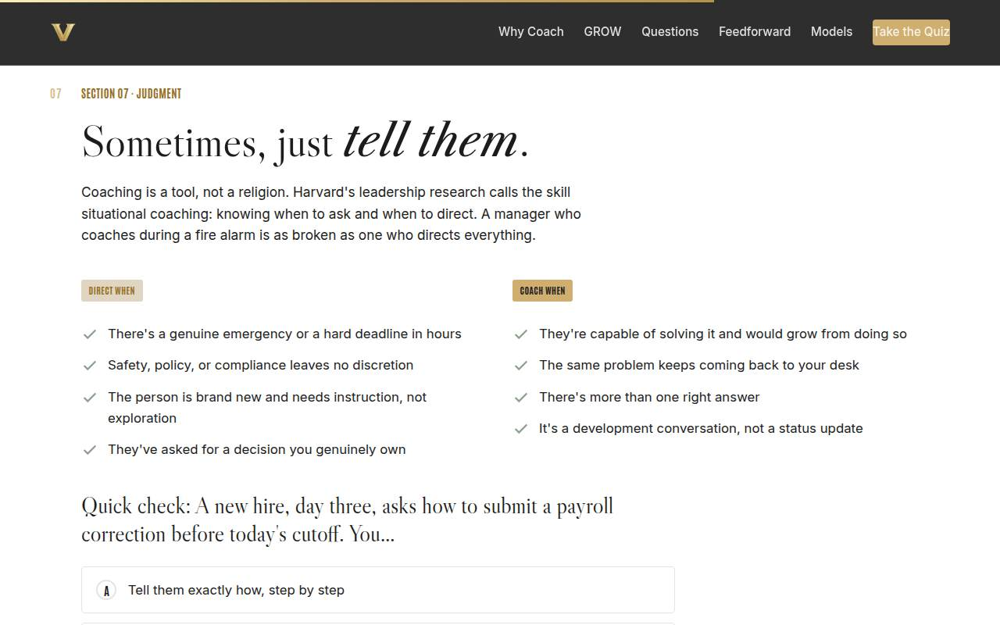
07 · When NOT to coach Full 6 min · Core 4
Install situational judgment (Ibarra & Scoular) so the new coaching habit doesn't overcorrect into coaching fire alarms.
Say
“Now the guardrail. Coaching is a tool, not a religion. When there's a fire, you point at the door; you don't ask 'what options do you see?' Direct when there's a genuine emergency, when compliance leaves no discretion, when someone is brand new, or when the decision is honestly yours. Coach when they're capable and would grow, when the same problem keeps returning to your desk, when there's more than one right answer. The skill is matching the mode to the moment, and then defaulting to coach, because your ratio is currently backwards.”
Do
- Walk the two lists: direct when (emergency, compliance, novice, your decision) and coach when (capable, recurring, multiple answers, development).
- Give the room permission out loud: directing is not a failure; unexamined directing is.
- Run the quick check; the new-hire-payroll scenario lands the point with a laugh.
- Run the solo activity: their Section 02 telling moment gets its verdict against the lists.
Ask
“What's a real situation from YOUR month where directing was the right call?”
Expect:
- A compliance or safety deadline
- A brand-new team member's first week
- An escalation the manager genuinely owned
Respond: Validate them: 'Right, and notice how specific those are. The trap isn't directing in those moments; it's letting those moments become the excuse for directing in all the others.'
Debrief: Match the mode to the moment, default to coach. That one sentence is the judgment layer on everything you learned today.
Validate: Quick check correct; each learner has classified their own telling moment as a fair direct or a missed coaching moment.
Watch for: The convenient conclusion that most of their directing was justified. Push gently: 'If the same problem has come back three times, it wasn't a directing moment.'
Transition: “Toolkit complete. Let's check what stuck, then aim it at a real person.”
Core path: Core: lists plus quick check; the reclassification happens inside the capstone.
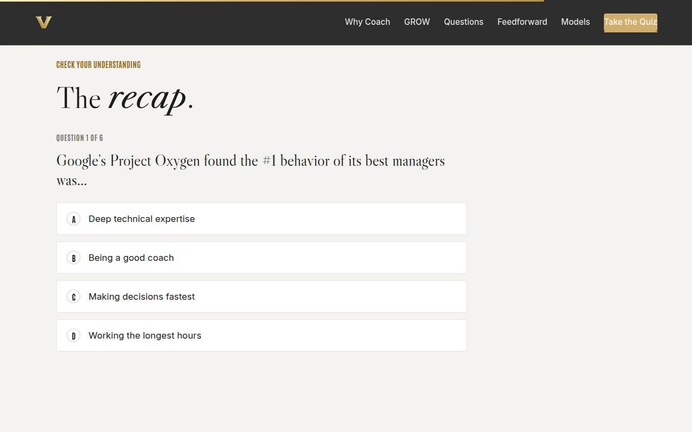
Recap quiz Full 4 min · Core 4
Score the session's knowledge against the objectives before the capstone applies it (Kirkpatrick Level 2).
Say
“Six questions, one per tool. This isn't a grade; it's a check on what's loaded before you aim it at a real conversation.”
Do
- Everyone takes it on their own device, all six questions.
- Ask for hands on 5-or-better; celebrate briefly.
- For any question the room visibly missed, do a 30-second reteach from the relevant slide, not a lecture.
Validate: Room mode at 5/6 or better. The quiz maps one-to-one onto the objectives, so misses tell you exactly what to reteach.
Watch for: Racing. Frame it as a mirror, not a race; the real test is a human on their calendar this week.
Transition: “Now the reason we're here. One real person, one model, one opening question, one date.”
Core path: Core: keep at full length; this is the objectives' evidence.
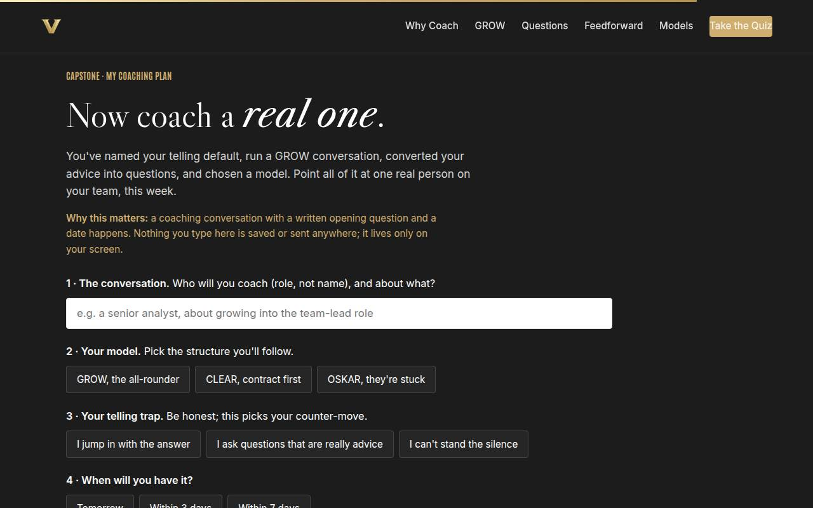
Capstone · My coaching plan Full 8 min · Core 7
Convert the session into one dated, planned coaching conversation with a written opening question: the transfer artifact and Level 3 seed.
Say
“You've carried one person through this session: the one you keep solving for. Time to give them a better manager. Pick your model, write the opening question in your own words, name your telling trap and its counter-move, and put a date on it inside the next seven days. Then two things that make it real: send the calendar invite before you leave this room, and tell one colleague which model you're using.”
Do
- Frame it: everything they've written today converges here: the person, the model, the trap, the date.
- Give quiet time; this is individual work. Circulate for stuck learners: the 'who' wants a role, not a name.
- Push the copy button moment: out of the browser, into their notes.
- Then the commitment mechanics: calendar invite sent before leaving, one colleague told which model.
- Remind them the plan's 'I will NOT' list is the part to re-read right before the conversation.
Ask
“What's most likely to make you skip this conversation, and what's your plan for that obstacle?”
Expect:
- The calendar, the week will eat it
- It'll feel awkward to suddenly coach someone I usually direct
- They'll just ask me for the answer anyway
Respond: Take each seriously: the calendar has one fix (book it now); the awkwardness has one script ('I'm trying something: I'm going to ask more and tell less'); and when they ask for the answer: 'I've got thoughts, and I want yours first. What have you considered?'
Debrief: A coaching conversation with a written opening question and a date happens. Everything else today was preparation for this page.
Validate: Every learner builds a plan (all four fields) and copies it out. That artifact plus the 7-day pulse is your Level 3 evidence.
Watch for: Learners picking their easiest report instead of the one who'd benefit most. Nudge once: 'Pick the person you've been solving FOR the most.' Also: anyone whose situation involves formal performance processes gets routed to HR first.
Transition: “Reference material in one breath, then the send-off.”
Core path: Core: protect at full length minus one minute of framing. Never cut the capstone.
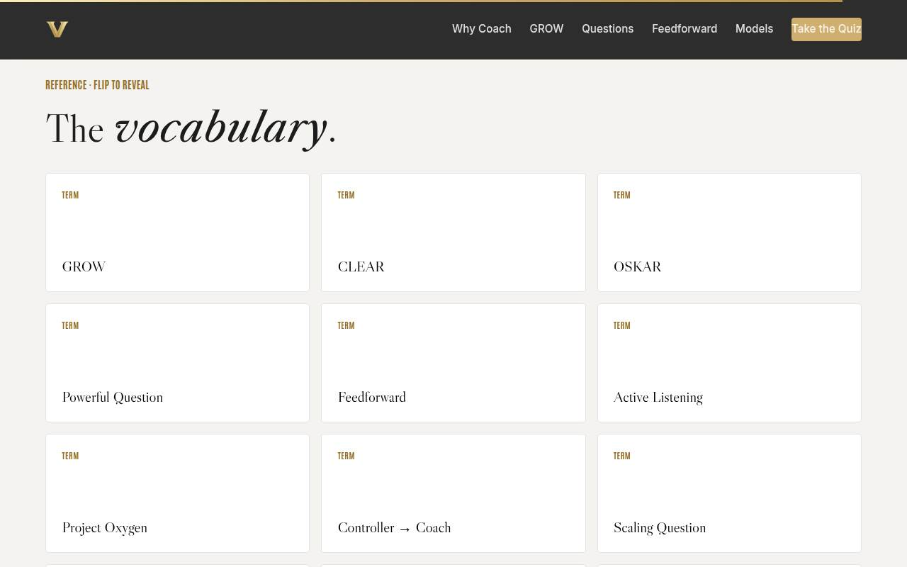
Glossary Full 1 min · Core skip
Signpost the reference layer; it lives here for after the session.
Say
“Every term from today lives here, flip cards, whenever you need them back. It'll still be here the morning of your conversation.”
Do
- Flip one card on the projector ('What Else?' is a good pick).
- Tell them it's all here whenever they need the vocabulary back.
Validate: None; reference material.
Watch for: Don't tour all twelve cards; one flip makes the point.
Transition: “Last slide. One question left to ask.”
Core path: Core: skip; point at it verbally from the closing slide.
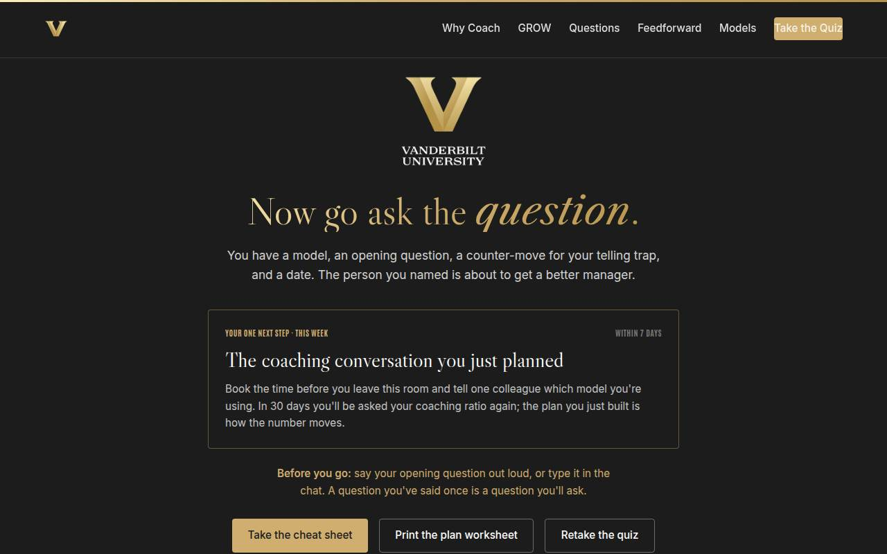
Closing · commitment Full 3 min · Core 3
Convert plans into public commitments, capture the Level 1 reaction check, and close the loop on the one next step.
Say
“Here's the whole session in one breath: the best managers ask, the structure is GROW, the questions are open and clean, the input is feedforward, and the judgment is matching the mode to the moment. You have a model, an opening question, and a date. Before you go: which model, and which day? Say it out loud.”
Do
- Read the featured card: the one next step is THE coaching conversation, within 7 days.
- Run the fist-to-five (Level 1): 'On a fist to five, how ready do you feel to run your coaching conversation?' Scan and remember the number for your session log.
- Run the commitment round, popcorn style: model and day, out loud or in chat. Opening questions from volunteers if energy is high.
- Point at the cheat sheet and worksheet buttons.
- Tell them about the 7-day pulse and the 30-day ratio re-poll, then land the last line and stop on time.
Ask
“Around the room, one line each: which model, and which day?”
Expect:
- 'GROW, Thursday morning'
- 'OSKAR, tomorrow's one-on-one'
- Some hesitation or 'next week sometime'
Respond: Thank each one, no commentary. For hesitators: 'Name just the day; the plan already knows the rest.' If someone isn't ready, let it go gracefully; the 7-day pulse gives them a second chance.
Debrief: The session's success metric isn't in this room; it's the ratio re-poll in 30 days. The conversations this week are how the number moves.
Validate: Fist-to-five mostly 3+ (Level 1); a majority state a model-and-day out loud or in chat. Count both; with the pulse and the 30-day ratio, that's your evidence chain.
Watch for: Commitment dodges ('when things calm down'). Convert one or two gently: 'Which day?' Things never calm down; calendars do.
Transition: “Go ask the question. And when their answer surprises you, and it will, say the two words: what else?”
Core path: Core: keep at full length; the commitment round IS the ending.
Generated from facilitator/notes.json. The on-screen facilitator edition lives at ./ alongside this guide.